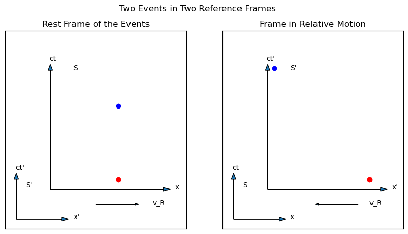
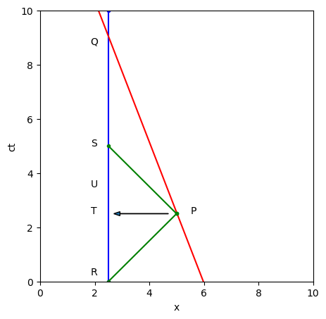

5. Properties of Spacetime Diagrams#
Now that we have the tools of the displacement four vector, the spacetime diagram, and the Lorentz transformation, it is worth taking some time to look at what we can learn about the properties of space and time by applying these tools to the spacetime diagram.
5.1. Summary so Far#
So far in our journey through Special Relativity, we have been considering the relative displacement in spacetime of two events, as measured in two different inertial frames of reference that are in relative motion with some constant velocity \(v_R\) (or \(\beta_R\)). We draw these events on a spacetime diagram, such as in Fig. 5.1 – the left side shows two events at rest in a reference frame S, while the right side shows where those same two events would land in a frame S’ which is moving to the right at speed \(v_R\) relative to S. Since S’ is moving right, the events will be measured as moving to the left, separated by some displacement \(dx'\) and some time interval \(dt'\) (which is different from the time interval \(dt_0\) in the rest frame).

Fig. 5.1 Two events at rest in an unprimed frame and in a primed frame moving to the right (which means the events displace to the left) with a speed of \(\beta_R = 0.75\).#
For two events at rest, we call the time interval between them the proper time, \(dt_0\), and the square of the displacement four vector is \(-c^2dt_0^2\). Because the size of a four vector is invariant through a Lorentz transformation, this must be the size of the displacement four vector in the S’ frame as well, which means, according to Equation (2.4):
Factor out the \(cdt'\) and divide through by \(c^2\) to get
But we take \(dx'/cdt'\equiv-\beta_R\), so
and if we take \(\gamma_R^2\equiv 1/(1-\beta_R^2)\), then
which we call Time Dilation (explained in more detail in Section 3.4, where I derived \(\gamma\) in a manner that looks completely different, but is geometrically identical to this one), and that is why the blue dot in the right graph is higher than the blue dot in the left graph.
What I wish to do in this chapter is to apply this kind of analysis to sets of events, to present patterns in spacetime that will help you improve your intuition about the implications that SR demands, which are so contrary to our day to day experience.
Checkpoint
If one event (call it B) is higher than another (call it A) on a spacetime diagram, then…
Choose the answer you think is correct and then click the button.
5.2. Types of Intervals#
In the list of principles that SR demands (Section 2.4) is the insistance that an observer can never “just know” what is going on somewhere else. Since in many frames of reference two events are separated by some spatial displacement \(dx\), it is worth considering just how the observer is to know that this displacement is indeed \(dx\) and not some other number. In the primed frame shown in Fig. 5.1, an observer cannot move from the red dot to the blue dot – such an observer would not in fact be in the primed frame. Such an observer would be at rest with respect to the unprimed frame, and the blue dot would be at the observer’s location. If the observer is at the location of the red dot in the primed frame they cannot be at the location of the blue dot.
How, then, is our primed observer to measure the distance to the blue dot, if they cannot walk over there? One imaginative method that is often used is to claim that the observer waits until everything is over, and then they collapse the whole lattice of rulers and clocks and piece together measurements of \(dx'\) and \(cdt'\) after the fact from the records of these clocks.
While that would certainly work in principle, it’s not very emotionally satisfying. Breaking down an infinite lattice of infinite clocks takes a long time. Is there a way an observer could determine \(dx'\) in a more immediate fashion? Indeed there is. The observer could send a pulse of light from their location (in the same place as the red dot, but not necessarily at the same time) in such a way that it reflects off a strategically placed mirror at the same location as the blue dot (at the exact moment represented by the location of the blue dot on the \(cdt'\) axis), and returns to the location of the observer at some later time.
Such a setup is illustrated in Fig. 5.2. The worldline of the (stationary) observer is a vertical red line. Two events are indicated by colored dots. The cyan dot is a single moment along the oserver’s worldline, while the green dot is off to the side. Orange lines represent the worldlines of the light that the observer must send and receive if they are to get information about the green event back to their location. There is a slider at the bottom of the diagram that allows you to move the green dot up and down, relative to the cyan dot. Note that “up and down” means “earlier or later” in time.
Fig. 5.2 Interactive spacetime diagram. The red line represents the worldline of a stationary observer. The cyan dot represents some event \(q\) on that worldline. The green dot represents some other event \(p\) that most definitely does not reside on the worldline with \(q\). To get information about \(p\), therefore, the observer must send a light ray out to \(p\) and get the reflection back. The worldlines of these light rays are shown in orange. The speed of light is taken to be 1. The observer can therefore define two time intervals that represent the elapsed time between event \(q\) and the events when the light was emitted and received. From \(t_1\) and \(t_2\) the observer can calculate a \(\Delta x\) and a \(\Delta t\), as described in the text. These four values as well as the interval you get from the displacement four vector are shown on the diagram. Move the slider to move \(p\) up and down relative to \(q\), and click the box to turn light cones for \(q\) on and off. The button will reset the camera to the original location.#
Given such a setup, the observer can define two time intervals, which we will call \(t_1\) and \(t_2\), following [Geroch, 1981]. The first is the time from the cyan dot until the light returns, and the second is the time from the moment the light is sent out until the time of the cyan dot. These time intervals are represented in Fig. 5.2 by a white and a magenta arrow, respectively The value of \(t_1\) is positive if the cyan dot happens before the light returns, and the value of \(t_2\) is positive if the light is sent out before the cyan dot. These two values, \(t_1\) and \(t_2\), are printed out on the diagram (technically multiplied by \(c\), but \(c=1\) – the factor of \(c\) will be ignored for the rest of this analysis), and you can see by moving the slider that if you shift the order of the cyan and green events, either \(t_1\) or \(t_2\) (but not both!) will switch to negative.
Given these two numbers and our knowledge about the speed of light, we can help our observer calculate values for \(dx'\) and \(cdt'\), without ever going over to the green dot! If the cyan and green dots are simultaneous, then \(dt'=0\), and \(t_1\) must equal \(t_2\) (this is the initial setup for Fig. 5.2, and you can see the symmetry yourself). The later the green dot shifts, the larger \(dt'\) should get, and the earlier the green dot shifts, the more negative \(dt'\) should get. Therefore, our observer can conclude that the temporal displacement between the cyan and green dots is
The total time to go out and back is \(t_1+t_2\). At the speed of light, the distance traveled would be duration times speed, so
These numbers are also displayed in Fig. 5.2 as \(c\Delta t\) and \(\Delta x\), to the left of the red line, using units where \(c=1\), for simplicity. The numbers in the diagram have been calculated from \(t_1\) and \(t_2\), using Equations (5.2) and (5.3) not measured from the graph using the graph’s \(x\) and \(y\) coordinates.
The interval of the displacement four vector, \(dx'^2-c^2dt'^2\) is also shown to the left of the cyan dot. What is interesting is that we can take Equations (5.2) and (5.3) and solve them for \(t_1\) and \(t_2\), and if you multiply \(t_1\) by \(t_2\), you can show this equals \(dx'^2-c^2dt'^2\)! (The derivation is in the right margin of this page.) The product \(t_1t_2\) (shown in the diagram to the right of the green dot) is just another way of writing the square of the displacement four vector!
Note
It is worth stressing here that this procedure, combined with an operational definition of a clock and the two postulates of relativity, creates an operational definition for the distance between these two events and the time elapsed between them. This definition does not depend on any assumptions about the space and time between the events. If we were to assume an Aristotalean, Euclidian absolute space and time grid (as the software does to make the graph), the geometry of the triangles shows that this operational definition will match your intuition about absolute space and time. However, in the relativistic model, where there is no such absolute underlying grid, this definition is still valid, whereas the challenge is to let go of your idea that the calculation is matching some underlying value. If we were to carry out this calculation in spacetime near a black hole, for example, we would get numbers for \(\Delta x\) and \(\Delta t\), but it wouldn’t make sense to ask whether those numbers matched the “real” separation of the events, in an absolute sense. In relativity, there is no absolute knowledge of all events, everywhere (unless it can be hypothetically reconstructed after the events are all over). Information has to travel to the specific location of an observer at the finite speed of light. This definition has the advantage of only depending on local measurements, and not any a priori knowledge of distant events that shortcuts the universal speed limit.
Try sliding the green dot up and down and verify that these two ways of writing the interval are always the same (to within possible rounding errors). The lesson here is that it is possible to measure the displacement between two events without an observer actually going from one event to the other (which can only happen in the rest frame of the observer).
Both these ways of writing the interval suggest three possible ranges of interest that an interval might fall into. As you move the slider back and forth, you should be able to identify these three possibilities. Either both \(t_1\) and \(t_2\) are positive, in which case the interval is positive, or one of the two is positive and the other negative, in which case the interval is negative, or one of the two is zero, in which case the interval is zero. These three options correspond to, in four-vector notation, to \(dx'>cdt'\), \(dx'<cdt'\), or \(dx'=cdt'\), respectively.
It is useful to classify a displacement four-vector into one of these three categories, because there are specific properties that each of these types of displacement four-vector have. Move the slider such that the interval displays zero. In this case, the displacement from cyan to green will be one of the orange lines – the worldline of the light that travels either out from or back to the observer’s worldline. The displacement between cyan and green in this case must be just like the displacement that light would follow, so this kind of interval is called a “lightlike interval”. For a lightlike interval, either \(t_1\) or \(t_2\) is zero (depending on whether the cyan or the green event happened first), which means that \(dx'=cdt'\), or \(dx'/dt'=c\), which means anything moving along that worldline has to be moving at the speed of light.
If the interval is negative, that means that \(dx'<cdt'\). In the sum of squares that represent the size of the four vector, the time component has a minus sign, up to and including the extreme case of the proper interval \(-c^2dt_0^2\). A negative interval is therefore more like a time displacement than it is like a space displacement, so such intervals are called “timelike”. As you might probably guess at this point, displacements where \(dx'>cdt'\) have positive intervals and are therefore called “spacelike”.
As you will see as this chapter develops, it is useful to group displacement four-vectors in these categories, because all timelike intervals share certain properties that it is useful to remember, as do all spacelike intervals. All lightlike intervals are in some sense the same, as they all equal zero, and they all have to equal zero in all reference frames, although of course the time and space components can change individually.
For example, consider all the possible events that are lightlike displaced from the cyan dot. These are all events that lie along diagonal lines that cross at the cyan dot and make \(45^\circ\) angles with the horizontal (if \(dx'=cdt'\), then the slope is 1 and it makes a \(45^\circ\) angle). If the cyan dot sends out light, that light will go up and away from the cyan dot at a \(45^\circ\) angle. Any event that sends light to the cyan dot must lie below the red dot at a \(45^\circ\) angle. All the lightlike intervals that connect to the cyan dot therefore make an \(\times\) across this diagram. However, this set of events is actually referred to as a “light cone”. Why a cone? Because if we do include the \(y\) dimension as pointing into the computer screen, then the \(\times\) can be rotated around the vertical axis, and instead of an \(\times\), we get a cone. Click the button on Fig. 5.2 to see the light cones associated with the cyan dot. Rotate the figure to get a sense of the three-dimensionality of the cone.
Of course, it’s only a cone if we include two space dimensions, \(x\) and \(y\), along with the time dimension. If we could include \(z\), the light would be travelling in a sphere, either expanding out from the red dot or collapsing to it. We can’t make a four-dimensional graph, though, so we represent the sphere as a cone, and the term “light cone” has stuck.
Warning
We will always talk about the “light cones” associated with any event, but please remember that it’s really an expanding sphere in 3D space.
If any real, physical, thing wanted to get from the cyan dot to a point on the upper light cone, or from a point on the lower light cone to the cyan dot, this thing would have to travel at the speed of light to do so. However, for any event inside these cones, it would in principle be possible to get to or from the cyan dot without hitting light speed. Therefore, the set of events inside the upper light cone are all the events on which the event at the cyan dot could possibly exert any kind of influence. We therefore call the events inside the cone the “future” of the cyan dot. All the events in the lower cone could possibly influence what happens at the cyan dot, so we call this set of events the “past” of the cyan dot. Every single event in all of spacetime has its own light cones, and therefore its own set of past and future.
Events that lie outside these light cones are neither past nor future, but some “other” that we don’t have a good name for. Events that are spacelike separated cannot influence each other, and one cannot be either cause or effect for the other. It takes light from the Sun about eight minutes to get here. If the Sun were to somehow vanish, that event would be outside the light cone of the Earth right now. It would take eight minutes for the light cone of that event to intersect the world line of the Earth, and only then would the horrific darkness and bitter cold ensue. So enjoy your eight minutes!
Checkpoint
For the following statements, determine whether you think they are true or false.
Pick a statement, choose your answer, and then click the button.
5.3. Example of Intervals#
To further understand how intervals and four-vectors are useful, consider the following example, adapted from [Geroch, 1981]. Consider the worldlines of two people (Asha and Bob) that reach the same location in space at a particular moment in time. Call this event Q. In the frame of reference of Bob, Asha is moving left at some (so far) unknown velocity. A spacetime diagram for this situation is shown in Fig. 5.3.
At some earlier time (compared to Q), we define an event P on the worldline of Asha. Since Asha is traveling slower than light, any light that leaves Asha at the time of event P will reach Bob before Asha does, and therefore before event Q. Call this event, when the light from P reaches Bob, event S. There is one more event we need, which is when light would have to leave Bob to reach Asha precisely at event P. Call this event R. All these events are marked in Fig. 5.3.
To sum up the narrative of these events, therefore, we have Bob emitting light at R that reaches Asha at P, bounces off Asha and returns to Bob at event S. At a later time, Asha reaches Bob and we have event Q. You could imagine this light carrying the information about the clock at P, so at S, Bob would know what Asha’s clock was reading at P. As Bob moves from S to Q, further light from Asha could reach Bob from later events along Asha’s world line, and Bob could watch Asha’s watch measure later and later times until both clocks reached the same time at Q. It would be possible to synchronize the clocks at that point and speak of clock readings relative to Q.

Fig. 5.3 Spacetime diagram of Asha (red worldline) passing Bob (blue worldline) at a constant speed, as measured in a reference frame where Bob is at rest. At event Q, both people are in the same place. At event R (9 s before Q), Bob sends a pulse of light to Asha, which reaches her and reflects back at event P (worldline of light is in green). The light returns to Bob at event S (4 s before Q). The arrow indicates how Bob chooses an event on his own worldline to be simultaneous to P, halfway between R and S.#
We can compare the four events in Fig. 5.3 to the spacetime structure defined in Fig. 5.2. If you drag the slider far to the left, the cyan dot would be Q, the green dot would be P, and R and S would be where the orange lines intersect the vertical red line. Asha’s worldline does not appear explicitly in Fig. 5.2, but it would be a diagonal straight line that hits both the green and the cyan dots.
Bob can therefore directly measure \(t_1\) and \(t_2\) off his own clock, without needing to assume any knowledge about what is going on over at Asha’s worldline. To make the math simpler, let’s say \(t_2\) is 9 s and \(t_1\) is \(-4\) s. Note that \(t_2\) is positive and \(t_1\) is negative, according to the rules under which they are defined in Section 5.2.
Bob would therefore conclude that event P happens 6.5 s before event Q (halfway between 9 s and 4 s, as indicated by the horizontal arrow). Let’s call T the event on Bob’s worldline that he infers to be at the same time as P. Given that he measures light to take 5 s to go out and back, Bob would calculate that event P happened 2.5 light seconds away from him. Bob would therefore conclude that to reach Q from P, Asha covered 2.5 light seconds of distance in 6.5 s of time and is therefore moving at 5/13 the speed of light, or \(\beta_{\rm Asha}=0.385\) (which means the Lorentz factor between the two reference frames is \(\gamma_R = 1.0835\)).
The situation gets more complex when we consider the events from Asha’s point of view. The interval between P and Q in this situation, as indicated in Fig. 5.3, is \(t_1t_2\), which is \(9\times(-4)=-36\) square seconds (square light seconds in distance units). Asha would measure P and Q to be at the same location, so to her this interval can only consist of a time component, which would have to be the square root of 36, or 6 s. She would say event P is 6 s before event Q, not the 6.5 s that Bob has calculated. Bob would therefore conclude that Asha’s clock is running a half-second slow, consistent with the pithy “moving clocks run slow” adage. It is also consistent with the longer formulation that a clock at rest with respect to the two events (Asha’s clock) measures a shorter time interval (than Bob’s clock).
The conceptual challenge comes when considering how to narrate these events from Asha’s perspective, in which Bob’s clock is the one that is moving. If “moving clocks run slow”, shouldn’t she be the one saying Bob’s clock is slow? How can we understand the lack of symmetry in the language, when the perspective seems perfectly symmetric? The symmetry is broken because P is not on Bob’s worldline. To consider a symmetric situation, we would have to pick an event on Bob’s worldline that Asha considers to be simultaneous with P, and then compare how their two clocks measure these intervals.
If Asha measures 6 s between P and Q, with no spatial displacement, then we can ask how much time according to Bob would look like 6 s to Asha. In other words, if Bob measures a proper time interval of 5.5 s, Asha would measure 6 s for the same interval (which has a spatial displacement in her reference frame), which we get by multiplying 5.5 s by \(\gamma_R\). If we take Q to be the end of that interval, the beginning would be 5.5 s earlier down Bob’s worldline. This event (call it U) would be on the blue line in Fig. 5.3, between P and S. Asha would say that U is at the same time as P.
This is NOT the same event (T) that Bob measures as simultaneous with P, because he measures that point to be 6.5 s before Q. Asha would conclude, symmetrically, that his clock is running slow, because what takes 6 s for her takes 5.5 s for him. Bob, on the other hand, measures 6.5 s to pass in the time Asha’s clock to measure 6 s, as derived above. He concludes her clock is running slow. The disagreement arises because they don’t agree on what simultaneous means, and they are actually considering different intervals. This relativity of simultaneity is explored further in Section 5.5, but this is an example of a case where the assumption that you know what is going on outside your light cone leads to confusion.
To specifically identify that simultaneous (to her) event on Bob’s worldline, Asha would have to have her own versions of R and S, where she would send and receive a light pulse to reflect off the moment on Bob’s worldline that measures at 6 s prior to Q in her reference frame (by the clocks in her lattice that lie along Bob’s worldline). That would be event U. For Bob, the interval between U and Q has to be \(-(5.5)^2=-30.7\) square light seconds. Asha would have to agree on the interval, but since she has a time component of 6 s, she would conclude that Bob is \(dx=2.3\) light seconds away at the event U (\(dx^2 - 36=-30.7\)). Her version of R and S would would therefore have to be 1.15 s before and after P on her own clock. She would conclude that Bob traveled 2.3 light seconds in 6 s, for a speed of \(\beta_{\rm Bob}=0.385\); the same speed Bob measures Asha as travelling.
It is also informative to consider how the two clocks appear to Bob between the events S and Q: at S (4 s before Q), Bob gets the light from P that tells him Asha’s clock read 6 s ago, not 6.5 s as he would have expected. Over the next four seconds, as Asha comes to meet him, the light coming from Asha to him will show him her clock ticking off six seconds in the time his own clock ticks off four. So when comparing these events, Bob would conclude that Asha’s clock is running faster than his. As also illustrated in Fig. 3.6, whether you think a clock is running faster or slower depends on the events you choose to define your interval.
In summary, when trying to ask whose clock is running slow, you have to be careful that you are considering the same events in each reference frame, and that you are not making assumptions that you just know what is going on along someone else’s world line. When Bob just assumed that T was at the same time as P, and that Asha would agree with him, that led to an apparent paradox about which clock was “actually” moving. Although “which clock is moving” will be relative and therefore have no absolute answer, there is a unique reference frame for any two specific events for which those two events are in the same place (at rest). That breaks the symmetry, because all other reference frames are moving with respect to that frame, so we can speak sensibily about which clocks are moving and which not, with respect to those specific events. Observers in different frames will measure different space and time displacements between two events, but they will agree on the relative speeds of the reference frames.
Note
The story of Bob and Asha can be very confusing. I strongly recommend you make your own version of Fig. 5.3 on a piece of paper and carry out the calculations step by step yourself as you mark each interval on the paper. If you do it on graph paper, you can measure \(\Delta t\) and \(\Delta x\) with a ruler to verify that you are using \(t1\) and \(t2\) correctly. Then work through Problem 9, below, which asks you to create the whole narrative from Asha’s frame of reference, to show that she measures the same speed for Bob as he does for her, even though they disagree on the timing of events.
5.4. How do the Axes Change?#
Consider the vertical and horizontal axes in a spacetime diagram. Each point on either axis is itself an event, with a coordinate of \(x=0\) or \(t=0\). So an axis on a spacetime diagram is the set of events that has one of the two coordinates be zero. The origin, of course, is the event where both coordinates are zero. One of the principles described in Chapter 2 is that all events in spacetime have to be observed in all frames. Switching reference frames can’t just make something not happen.
Therefore, we can ask how the coordinates of the set of events that make up the axes of the unprimed frame change when we shift into the primed frame. Or, to turn it around, which events will land on the axes in the primed frame, and where were they originally in the unprimed frame? I can explain this conceptually for the vertical axis, and then we will see what the math for the Lorentz transformation tells us.
The vertical axis is all the events that occur at \(x=0\). A vertical worldline represents an object at rest. Let’s say I am an observer at rest at the origin, so my worldline is the vertical axis. If I consider the perspective of my friend Dave, who is in a primed reference frame moving to the right at \(v_R\) (assume Dave and I are at the same location at time \(t=0\)), each successive event on my worldline will shift further to his left, as Dave moves further and futher to the right. So the original axis (my vertical worldline) will tilt left in the primed frame (Dave’s point of view, as I fall further and further behind him). Furthermore, as Dave walks to the right, successive events that are to my right will now be at Dave’s location. If I were to draw Dave’s worldline on my spacetime diagram, it would be a rightward tilting line, but this line will be the vertical axis in Dave’s primed frame.
Therefore, if I want to draw the set of events on the unprimed frame that will be the vertical axis in a primed frame, I will draw a tilted axis with a slope of \(1/\beta_R\). Dave’s (relative) speed is distance over time, but the spacetime diagram puts time on the vertical axis, so “rise over run” implies a slope of one over speed. The faster the relative speed of the primed frame, the more tilted the new axis line will be, up to a speed (and therefore slope) of 1, since Dave can’t go faster than light.
Warning
I stress that this axis is only tilted in the original, unprimed, frame. If I were to redraw the spacetime diagram in the primed frame, the axes would be horizontal and vertical, as normal. The set of events in the unprimed frame that will be vertical in the primed frame make up a tilted line in the unprimed frame. Fig. 5.5 shows a case where the axes are implicitly redrawn every time the reference frame is shifted, while Fig. 5.4 is keeping the same original axes while showing which events would be on the horizontal and vertical axes, if you were to redraw them.
We can show this intuitive prediction mathematically by performing a Lorentz transformation. We can ask, of all the points \((ict,x)\) in the spacetime plane, which ones will end up having \(x'=0\) in the primed frame? The transformation looks like:
According to Equation (5.4), the set of points that will be at \(x'=0\) will have the condition that \(x=\beta_R ct\). Since the time axis is vertical, this equation describes a straight line through the origin with a slope of \(1/\beta_R\), as predicted by intuition, above.
However, Equation (5.4) lets us go further, to ask a question that is much harder to describe intuitively: which events will land on the horizontal axis in the primed frame? These are the points where \(t'=0\), and we can find them by setting the time component of Equation (5.4) equal to zero. In that case, \(ct=\beta_R x\), and that is the equation of a straight line through the origin with a slope of \(\beta_R\). The primed horizontal axis will be an upward tilting line that shift to a steeper slope as you increase \(\beta_R\), up to 1, since that is as fast as you can go.
The results of these two equations are depicted graphically in Fig. 5.4. You can shift the slider below the figure to change \(\beta_R\). The yellow arrows that represent which events will be on the axes in the primed frame will tilt as you change the relative speed. Again, the actual unprimed axes remain unchanged – the tilted axes are telling you which events will end up on the perpendicular axes in the primed frame, if you were to redraw them.
Fig. 5.4 A spacetime diagram where the events that lie on the axes are indicated with yellow arrows. A slider below the diagram allows you to change the relative speed of a primed reference frame, and the arrows will tilt to indicate which events will end up on the axes of the primed frame, were you to redraw the diagram in the new frame. Note that the sets of events tilt together as you increase the relative velocity to the right. The original axes remain where they were, indicated by white arrows.#
Checkpoint
In Fig. 5.4, at what relative speed will the event marked with the cyan ball happen in the same place as the event at the origin? At what speed will the event marked with the red ball happen at the same time as the event at the origin?
Choose the answer you think is correct for each question and then click the button.
5.5. Simultaneity is Relative#
The behavior of the vertical axis is easy to understand just by imagining someone walking. The faster you walk, the further apart in space the events that you pass by will be, and therefore your worldline (which is by definition the vertical axis in the primed frame) will tilt further and further.
Consider the event represented by the cyan dot in Fig. 5.4: as the diagram is first drawn, with the observer at rest in the unprimed frame, the event is to the right of the vertical axis. As you move the slider to the right and the axis tilts, you can choose a speed such that the yellow arrow lies on the cyan dot. This represents walking just fast enough that you get from the origin to the location of the cyan dot just as it happens. If you walk faster, you will pass the cyan dot before it happens, and the event will happen to the left of the axis in the primed frame.
It is therefore possible, by altering the relative speed, to choose a reference frame in which the cyan dot event is either left, right, or at the same location as the origin. This amounts to simply choosing a speed so that you fall short, overtake, or precisely reach the event as it happens. Since you can get to the cyan dot from the origin by moving at a speed less than \(c\), the cyan dot lies inside the light cone of the origin, and the interval between the origin and the cyan dot is timelike. This leads to the conclusion that through a careful choice of reference frame, a later event can be right, left, or at the same position in space as an earlier one, if the two are timelike separated.
This hopefully seems rather intuitive. You have overtaken or reached events many times in your life, so hopefully it is not hard to imagine the implications of shifting the vertical axis as shown in Fig. 5.4. However, it is much harder to imagine how the red dot interacts with the horizontal axis. The mathematical description is almost identical to the case of the cyan dot, only rotated \(90^\circ\). I will repeat what I said above, in only slightly different words: through a careful choice of reference frame, an event to the right can be before, after, or at the same time as an event to the left, if the two are spacelike separated.
Play with the slider and convince yourself that this is accurate. By changing the relative speed, you can put the red dot above the horizontal axis (the red event happens after the event at the origin), below the horizontal axis (the red event happens before the event at the origin), or on the horizontal axis (the red event happens at the same time as the event at the origin). This is very hard to accept, but this means that simultaneity is relative. Whether events happen at the same time, or in which order they happen, depends on your choice of reference frame, as long as the events are spacelike separated. The fastest you can go is \(\beta_R=1\), which is a line with a \(45^\circ\) angle slope, so you can never go fast enough to get the horizontal axis to reach, say, the cyan dot.
One of the reasons this may bother you is it may seem like this may contradict causality. If I can arbitrarily switch the order of events by choosing a different reference frame, can I make effects happen before causes? Thankfully, no. You can only change the temporal sequence of events that are spacelike separated, and events that are spacelike separated can never be cause or effect for each other, because something would have to move faster than light to carry the influence from one event to the other. Nature preserves causality, but what you think of as “simultaneous” will depend on what reference frame you are in.
Note
It is important to note that this discussion of simultenaeity involves the question of whether two events at different locations in space happen at the same time (as measured by our lattice of clocks). If two events happen at the same place and the same time, then those are not actually two events, but only a single event, and that can’t be split into two events in a different reference frame. There is room to discuss whether one interaction is actually two events, which has implications for the meaning of Newton’s 3rd Law, among other issues, but I will save that for Chapter 10. For now, for there to be two events at all, at least one component of the displacement four-vector has to be non-zero.
5.6. Conclusions from Sets of Events#
To sum up what we have learned about spacetime from exploring how these diagrams change under Lorentz transformations, I have created one more interactive diagram, shown in Fig. 5.5. This diagram also has a slider that lets you change the relative speed of a primed reference frame, but every time you change it, the program redraws the diagram with the new axes.
Warning
The axes in Fig. 5.5 are always labeled \(x\) and \(ct\), even though as soon as you change \(\beta_R\) away from zero, they strictly should change to \(x'\) and \(ct'\).
On this diagram are shown sixteen spheres to represent a set of events. In the original, unprimed frame, the events make up a square, so you could think of them as four people standing still, snapping their fingers four times in unison. Each vertical column of four events are happening at the same place, and each horizontal row of events are happening at the same time.
Fig. 5.5 Interactive spacetime diagram that shows 16 events. The default is to have the events in a grid. You can think of this as four objects at rest, separated by some distance along the \(x\) axis, with four events along each vertical worldline. There is a slider to change a relative velocity \(\beta_R\). However, what happens when you change the slider is that the program applies a Lorentz transformation to each event and then plots the 16 events in a new reference frame. Each time you change the slider, you are changing to a new reference frame. Certain points are marked in color, and the implications of how they shift are discussed in the text.#
As you change the relative speed of the primed frame, these sixteen events will shift around according to the Lorentz transformation. This is the opposite operation to pinching the axes in Fig. 5.4 – here, the points between the axes are being stretched. Play with sliding the marker back and forth and see how the events move. You could imagine this as the “pinched” axes in Fig. 5.4 being streched back to perpendicular, and therefore all the events between them being pulled outward, too, as if they were on a rubber sheet.
Note
It is useful to start thinking about space and time as being able to be stretched and squeezed, as this is an important feature of General Relativity.
I have marked several spheres with color, and made three of them leave trails behind, to draw your attention to them and gain particular insights. The cyan sphere marks the origin, and note that it does not move. If all the components of a four vector are zero, the Lorentz transformation will not change them. You can use the cyan sphere as an anchor by which you can compare the locations of the others.
The orange event on the time axis will move left or right (since it is timelike separated from the origin) as well as up, leaving a bowl-shaped trail behind. This is Time Dilation. The shortest possible time interval will be measured in the frame where the two events (cyan and orange) are at rest. If you zoom in on the orange sphere, you will see that the trail gets flatter and flatter, the more you zoom in. This is a representation that for small \(\beta_R\), the Lorentz factor gets close to one, in which case \(dt'\approx dt_0\). If the intervals are equal, the trail would be flat, and the closer you zoom in, the flatter it gets.
The red spheres are all lightlike separated from the origin, and you can see that when you move the slider, they stay along the \(45^\circ\) line through the origin. Since the speed of light is the same in all reference frames, events that are lightlike separated will be lightlike separated in all reference frames. All the spheres above the red spheres are timelike separated from the cyan sphere, and all the spheres below the red spheres are spacelike separated from the cyan sphere. You can see that no matter how you move the slider, you can never change a timelike interval into a spacelike interval, or vice versa.
The green sphere represents an event that is simulataneous with the cyan event at the origin in the original frame. By moving the slider, you can see that the temporal order of these events can be switched. In fact, pick any two events you like that are separated by a spacelike interval, and you can find ranges of \(\beta_R\) where the order is switched. What counts as “simultaneous” depends on your frame of reference.
Finally, note that the green event leaves a trail that looks just like the orange trail, only rotated \(90^\circ\). You might think from this similarity that there must also be a length dilation to match the time dilation illustrated by the orange trail. This is not the case. Instead, we talk about a length contraction (explained further in Section 6.4). How can this be? The difference lies in what we mean by “length.”
Return the relative speed slider to zero. Now imagine that the leftmost and rightmost column of events lie upon vertical worldlines that represent the left and right ends of an object at rest. Then the magenta sphere and the green sphere are in the same place, and are separated from the cyan sphere by the same spatial distance. However, the cyan and green events are simultaneous, so we define the length of the object by the locations in space of these events. The magenta event is the same distance away from the cyan event as the green event, and therefore its location on the horizontal also measures the length of the object.
If you increase the relative speed \(\beta_R\) to about \(0.67\), you will see that although the green event is much further away, it also happens much earlier than the cyan event. The spatial displacement between green and cyan can no longer be considered to be the length of the object! In this reference frame, the object is moving, and if you consider the distance between the back end of a moving car ten seconds ago and the front end of the car now, then you are including the distance driven by the car during those ten seconds as part of the length of the car, which is not the way we usually would think of the length of the car.
Note
It might be useful to look at this interactive version of Fig. 5.5 – it lets you add your own events and see how they shift around under Lorentz transformations.
Instead, we must consider the magenta event, which is simultaneous in this reference frame with the cyan event. Since it was at the end of the object in the original frame, it must also be at the end of the object in this frame, so in this frame, we would consider the “length” of the object to be the spatial displacement between the cyan and magenta events, which you can see from the trails is smaller than the spatial displacement between cyan and green in the original frame of reference. Lengths contract. We will work out examples of length contraction more thoroughly in the next chapter.
5.7. Hyperbolic Rotation and Rapidity#
It might, when you move the slider in Fig. 5.4, remind you of rotation. Certainly there is rotation going on – the axes are swinging around the origin. But it’s also clearly not the kind of rotation you’re used to. When we usually rotate the \(x\) and \(y\) coordinate axes around the \(z\) axis, the two arrows move together. However, in Fig. 5.4 , the arrows are moving symmetrically in opposite directions. In the familiar kind of rotations, you can keep swinging the axes around and around and around, increasing the angle as far as you like. However, in a spacetime diagram, there is an asymptotic limit to how far the axis will swing – they will both move toward a slope of 1.
This is still a rotation, but it’s called a hyperbolic rotation. You can even mathematically make it look like a rotation. Recall that when we rotated the coordinate axes around the \(z\) axis, we determined how that would affect a vector by multiplying the vector by a matrix:
When you multiply that out, you get
Note that the \(x\) and \(y\) components of the vector get “mixed up” when you rotate the coordinate system. By rotation, you are turning part of \(x\) into \(y\) and vice versa.
You can gain an intuitive understanding of how this works by standing up and pointing your left hand straight ahead of you, and your right hand straight to the right, with your arms at full extension. Now, turn to your right without changing the relative orientation of your arms. Your left arm is now pointing where your right arm was, and your right arm is now pointing opposite to where your left arm was. If we take your original right arm to be \(v_x\) and your original left arm to be \(v_y\), you can plug ninety degrees into Equation (5.6) and see that \(v_x^\prime\) (where your right arm is now) is \(-v_y\) (opposite where your left arm was) and \(v_y^\prime\) (where your left arm is now) is \(v_x\) (where your right arm was). For intermediate angles, you would express your new arm directions as combinations of your original arm directions.
The periodic nature of the sinusoidal functions corresponds to the angle being able to go around and around and around. To have the angle approach an asymptote, as in a spacetime diagram, we need the hyperbolic trig functions, \(\tanh\), \(\sinh\), and \(\cosh\). In a normal \(x-y\) plane, if you had a vector in that plane, the angle the vector would make with the \(x\) axis would be \(\tan{\theta} = v_y/v_x\), opposite over adjacent. However, for spacetime, it’s the hyperbolic tangent: \(\tanh{\phi} = dx/cdt = v/c = \beta\). Note that we put \(x\) over \(y\) to get \(\beta\).
There’s a trig identity that says \(\cosh^2-\sinh^2 = 1\) (see margin note to the right). Since \(\tanh = \sinh/\cosh\), we can square both sides and substitute for \(\sinh^2 = \cosh^2-1\) to get
But we already know that \(\beta^2 = 1 - 1/\gamma^2\), from the definition of \(\gamma\), so \(\cosh{\phi} = \gamma\)!
Finally, since \(\cosh{\phi} = \gamma\) and \(\sinh^2{\phi} = \cosh^2{\phi}-1\), then
So \(\sinh{\phi} = \beta\gamma\) and \(\cosh{\phi} = \gamma\). But \(\gamma\) and \(\beta\gamma\) are just the elements of the Lorentz transformation matrix! This means we can write the Lorentz matrix as
If you compare Equation (5.9) and (5.5), you can see that except for the hyperbolic part, and the \(i\), they look very similar (and in Einstein notation, you leave out the \(i\), as well). This means, in a very real but very odd sense, changing speeds actually rotates space and time into each other, in much the same way that rotating axes rotates \(x\) and \(y\) into each other.
Four-vectors maintain the same “size” in this rotation, but how much of it is space and how much of it is time will change. If you hold out your arm, your arm will extend through space both horizontally and vertically. If you rotate your arm at the shoulder, your arm will stay the same length, but how much is vertical and how much is horizontal will change. And yet we don’t think about horizontal and vertical as being that different from each other – you might even feel odd talking about a horizontal and vertical part of your arm. But if you perform a Lorentz transformation, how much a four dislacement extends through time and how much through space will shift accordingly. Changing relative speed is like rotating through spacetime.
The letter \(\phi\) in these equations is called the “rapidity”, and it depends on \(\beta\) as
However, despite the trig functions, don’t get confused and think that \(\phi\) is an angle in the regular sense of how you think of that term. In Equation (5.5), the letter \(\theta\) corresponds to the angle through which we rotate the axes of the diagram. However, in the case of Equation (5.9), if \(v\rightarrow c\), then the axis will pinch to an angle of \(45^\circ\), while \(\phi\rightarrow\infty\) (the \(1-\beta\) in the denominator of Equation (5.10) goes to zero).
Why might you want to do this? Two reasons. First of all, it’s kind of neat to think about a “boost” (the name of the operation of changing speed into a new reference frame) as a kind of rotation between space and time. Secondly, should you need to apply two Lorentz transformations in a row, you may recall there are trig identities that let you write the product of trig functions as a trig function of the sum of the angles. In this case, you can work out that two successive Lorentz transformations, if you write them like Equation (5.9), work out to a single Lorentz transformation using the sum of the rapidities of the two original transformations: \({\cal L}_x(\phi_1) {\cal L}_x(\phi_2) = {\cal L}_x(\phi_1+\phi_2)\). This could save a lot of number crunching, as the Lorentz matrices do NOT add this simply if you use \(\beta\) and \(\gamma\).
5.8. Problems#
According to observers in a reference frame at rest with respect to both the Earth and a star 3.25 LY away, an astronaut on a spaceship near the star eats breakfast at 7 am, while their spouse on Earth eats lunch at five hours later. How fast would an observer in a rocket need to travel, and in what direction, to conclude that the spouse ate lunch before the astronaut ate breakfast?
George Gamow, in his delightful but dated book, Mr. Tompkins in Wonderland, ([Gamov and Stannard, 1999]) posits a world where the speed of light is only a few km/hr, and all these odd effects of relativity are commonplace for people in that world. In one example, Mr. Tompkins is the witness to a murder on the train platform while he was on the train pulling into the station. Mr. Tompkins observes a young man reading a newspaper when the ticket collector is shot. When Mr. Tompkins emerges from the train, the young man is holding a smoking gun. A police officer places the young man under arrest, despite the young man’s protestations that he only picked up the gun after the murderer dropped it. Mr. Tompkins affirms that he can support the young man’s alibi, as he saw the young man reading the paper at the moment the ticket collector was shot. The police officer is not convinced, pointing out that Mr. Tompkins was on a moving train, and therefore his sense of what events are simultaneous will not match up with simultaneous events on the platform. For this reason, his testimony does not conclusively exonerate the young man. What do you think? Is the police officer correct, or is Mr. Tompkins?
Show that even when you tilt the axes as in Fig. 5.4, the properties of the Lorentz transformation are such that the new axes are still orthogonal, even though they are clearly not perpendicular in the figure. In other words, show that \([dt]^\prime\cdot [dx]^\prime = 0\), when expressed in the unprimed variables.
The following questions are with regard to Fig. 5.5:
a) Can you find relative speeds for which each of the events below the red dots happen before the cyan event?
b) Can you find a speed at which any of the events above the red dots happen before the cyan event?
c) At \(\beta_R=+0.67\), which of the dots lies on the vertical axis above the cyan dot? That is, where was this dot originally when \(\beta_R=0\)?
d) At \(\beta_R=+0.67\) consider the duration of time between the cyan event and the event from part c). Is this time interval longer or shorter than the duration of time (as measured when \(\beta_R=0\)) between the cyan event and the orange event? Does this make sense?
Derive the definition of rapidity \(\phi(\beta)\) (Equation (5.10)) from \(\tanh{\phi} = \beta\).
This one could end up being rather annoying, so probably best to just do it for the time component. Show that two successive boosts, when you use rapidity and the hyperbolic trig functions, are the same as a single boost with the sum of the rapidities. In other words, show that
Note that in considering two successive boosts, you can’t just conclude that the final speed \(\beta_{1+2}\) will be the sum of the two individual boosts (\(\beta_{1+2}\neq\beta_1+\beta_2\) – if you doubt this, consider the case where \(\beta_1=\beta_2=0.75\). Do you see how adding those together would be a problem?). However, you can just add rapidities, because they can go as high as you like. Start with \(\phi_{1+2} = \phi_1+\phi_2\) and plug in Equation (5.10) to get a formula for \(\beta_{1+2}\) as a function of \(\beta_1\) and \(\beta_2\). You will see this formula again in Chapter 7.
An event is at \((ct,x)=(1~{\rm m},2~{\rm m})\) in some reference frame. Is the displacement from the origin to this event timelike, lightlike, or spacelike? How fast would another reference frame have to travel relative to this one to observe this event on the horizontal axis? Perform a Lorentz transformation at this value for \(\beta_R\) and verify that this is so.
Consider the case where a bolt of lightning creates a peal of thunder. You are 5 km away from this event. Write down displacement four vectors for the events of your seeing the lighting and your hearing the thunder, relative to the event of their creation. Find their intervals and determine if they are timelike, lightlike, or spacelike. With appropriate scaling, you can use Fig. 5.2 to represent these situations. Do your classifications make intuitive sense, and how do they compare with the light cones from the original event?
Draw Fig. 5.3 in the frame of reference where Asha is at rest and Bob is moving to the right. P is now 6 s before Q on Asha’s line, but now R and S will be on Asha’s line, and they will both connect to U on Bob’s line. Remember that the lines between P and R and P and S are still at 45 degree angles. Verify the claims in the text about the relative locations of R, S, P, and U. Calculate \(t_1t_2\) to get the interval between U and Q (claimed to be \(-30.7\) square light seconds), and compute the \(dx\) (2.3 light seconds) and \(cdt_0\) (5.5 light seconds) that Asha would calculate for these events.